tool calls
A website asks the wallet to do something through a tool link. The page never
gets spend power. The wallet shows the request, and you decide. Tool
001 asks to spend. Tool 002 asks to share a view-only
key.
pay with the browser wallet (tool 001)
On a checkout page, the payer clicks pay with browser wallet. The content script blocks the navigation and sends the request to the wallet. The send plate switches to the standard transaction view. The amount and the address are filled in and locked. They come from the tool link:
destination.tld/#monerochan001_amount_0.018060647654824902_address_4Jxz3bZeGQj9qZeWBd2XPyJCyNQaf...7h1
- click the pay link on the checkout page
- the send plate opens with the payment link block: context site, destination site, amount, click time
- move the safety slider to fire
- click
SENDonly if you want this payment sent
The address check asks the link host whether it recognizes the address. valid means the host claims it. It does not prove the shop name, and the site checks the amount itself, later, by scanning the chain. A new request always replaces the older open request of the same kind, so two payment links never stack on the plate.
view-only wallet share (tool 002)
The merchant dashboard offers Add Wallet. Clicking it opens a share request in the wallets plate. Accepting posts the view key to that site, so it can watch incoming payments. It never gives the spend key. The site still cannot move funds.
- on the paymentlinks dashboard wallets page, click Add Wallet
- the wallets plate shows view-only wallet share with the slot number
- click
ACCEPTonly if you want the view key posted to that site - click
DISMISSto refuse
The request is valid only when the page and the link belong to the same site. The view key is posted to the link origin.
The shared wallet is derived from the seed for that slot and domain (see seed derivation).
no wallet installed
A visitor who clicks a payment link without the extension does not get an error page. The site serves a fallback that explains the missing wallet and links the install page, with a way back to the checkout.
action log
Every request is recorded with its state. The action log page lists the
newest five per page: what the site asked for, the amount, the time, and
whether it is in progress, done, failed, or dismissed. A failed send keeps
its error text. The tabs split the list into history, success, discarded,
and txlog, which shows every send attempt from the wallet cache. Open it
from the send plate or the wallets plate with the actionlog
control.
wallet
The wallet lives in the browser side panel. Balance on top, plates below. Destructive actions are only possible when the safety slider is in the fire position. Treat the open wallet like a loaded gun.
safety slider
The slider sits at the top. safe (left) locks sending: both the normal send and coin control return immediately while the knob is on safe, so a stray click on a website cannot move funds. fire (right) arms the send buttons.
- click
#safeto lock,#fireto arm - the knob moves and
window.unlockedflips
The slider is the safety catch. It stays on safe so logging in to a website can never send your life savings.
balance, amount and pending
The fire label shows the unlocked amount, the part a send can use. Under it, a second line shows pending funds: received or change outputs that are not spendable yet. Change from a send sits here until it unlocks.
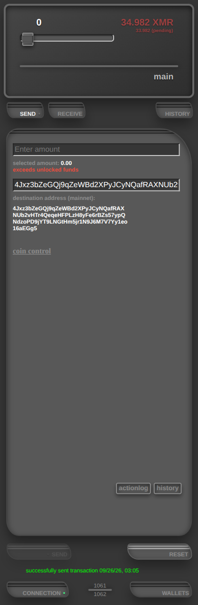
keyboard shortcuts
Keys are the first letter of the target. In the wallet, s r h
c w open send, receive, history, connection, and
wallets. In the action log, h s d
t switch the history, success, discarded, and txlog tabs, and
the arrow keys turn pages. The page field jumps on every digit typed.
standard send
The send plate has an amount field and an address field. Fill them, arm the
slider, press SEND. The panel only posts a message; the worker
picks the inputs, builds, signs, and relays. The line under
SEND shows the result of the last attempt.
- click
SENDin the lower menu to open the plate - fill the amount and the address
- slider to fire, then click
SEND RESEThides the status line on this plate. History keeps the transaction
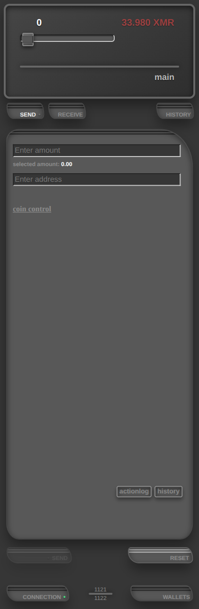
coin control
Click coin control on the send plate to replace the simple
fields. You choose the inputs and the outputs yourself. The link turns into
standard transaction. Click it to go back.
- output rows: one row of amount + address to start, add output adds one, remove deletes a row (the first row too)
- select input: tick the outputs to spend; the worker spends exactly those
- external sweep: one destination address only, no amount field; it receives the selected inputs minus the fee. No selection sweeps every spendable input
- a failed send that got as far as signing shows a rebroadcast control that relays the stored transaction
Opening coin control retires an open payment-link request. The two ways to configure a transaction never run at the same time.
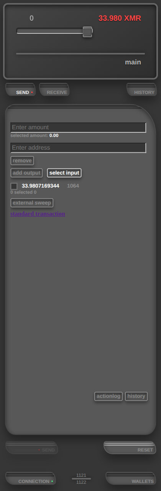
receive
The receive plate shows the address a payer uses, with NEW ADDRESS and COPY. Open a subaddress row to see its details. Those are all subaddresses. If you want to know the primary address you have to inspect the files in the developer settings in the connections plate.
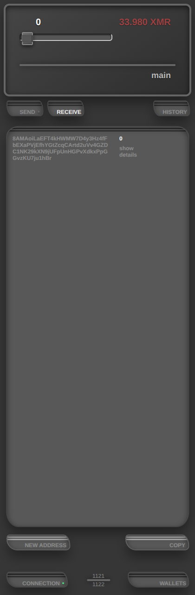
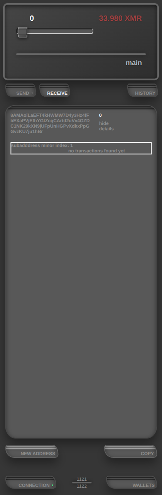
history
The history plate lists every transaction, including sends hidden by
RESET on the send plate. show details opens the hash,
the inputs used, the output amounts, and the change.
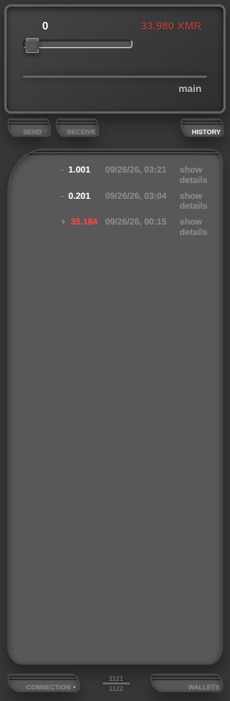
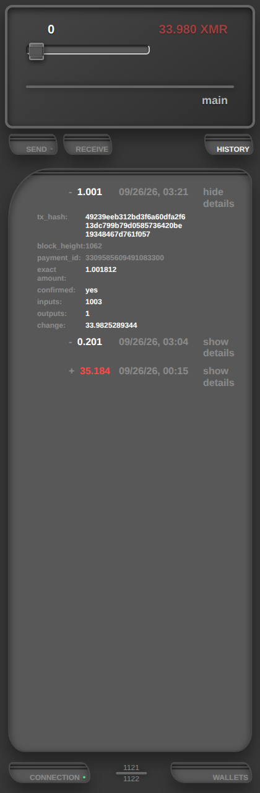
connection
The connection plate holds the node URL and the scan start height.
TEST CONNECTION queries the node before you trust it,
SAVE applies, RESET puts the fields back to the saved
values. An empty start height means the chain tip at save time; 0
scans from the start.
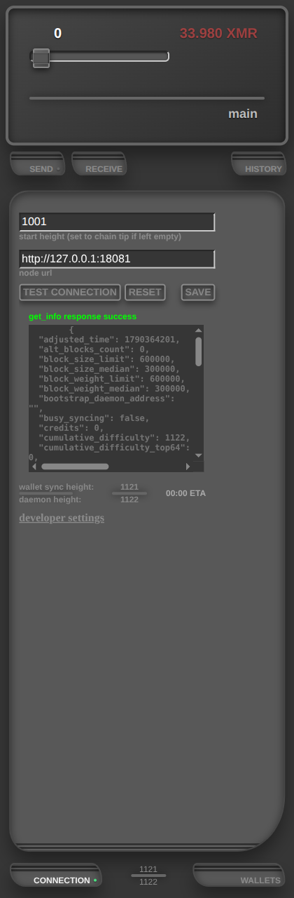
developer settings
Under the connection plate. Export a backup (wallets.json,
contains secrets, click only if you want it on this computer), wipe
every wallet file by typing DELETE ALL FILES (canonical path to reset wallet), inspect the wallet files, and drive a local regtest node:
mine 1 block to this wallet, 60 blocks for confirmations, or 1000 blocks
for decoys.
Log level (off / console / file / both) and the per-function log switches sit in the same section. A new wallet starts with logging off; a level change restarts the worker. The file list refreshes about once a second.
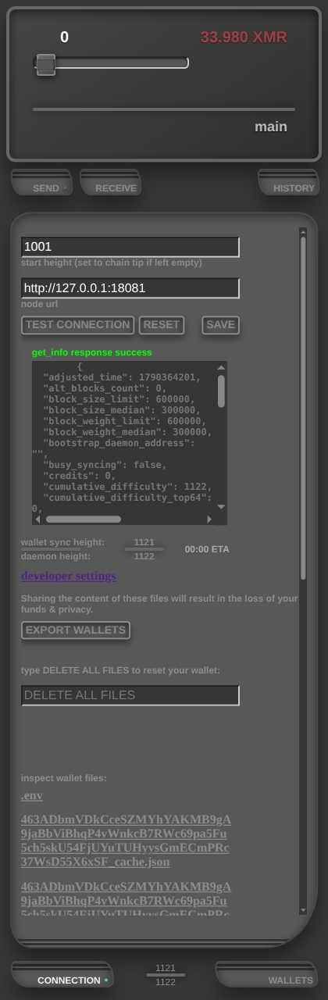
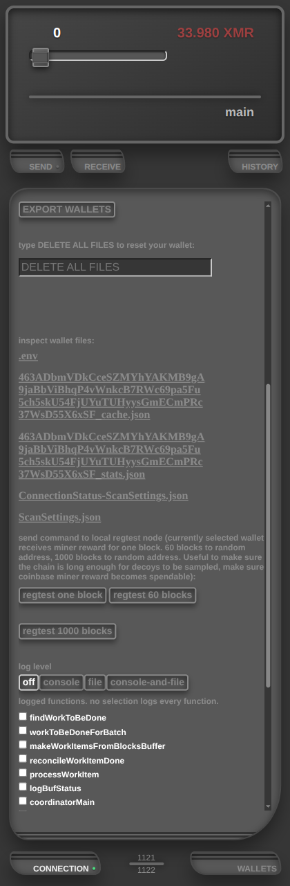
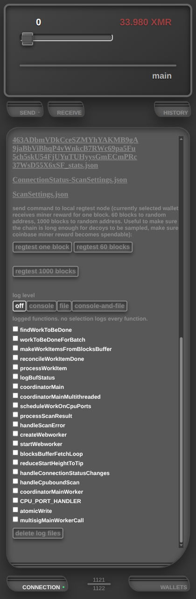
wallets
The wallets plate lists the saved wallet routes; the selected one is the wallet send and receive use. advanced options opens Remove Wallet Route and Restore Wallet Route. Removing deletes the route and its cache files. Funds stay recoverable from the seed phrase, which rescans them.
A catastrophic reorg (a node restart on regtest does this) replaces the top area with a warning. Reset the wallet, then recover from the seed phrase or generate a new one.
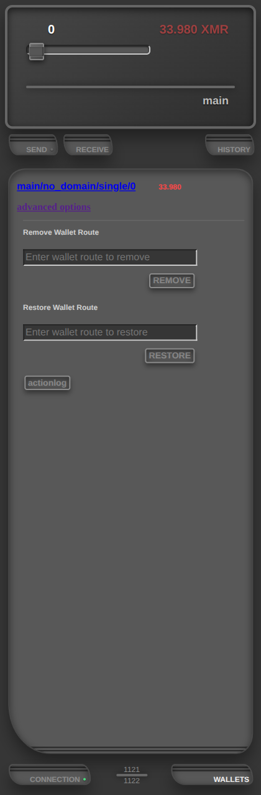
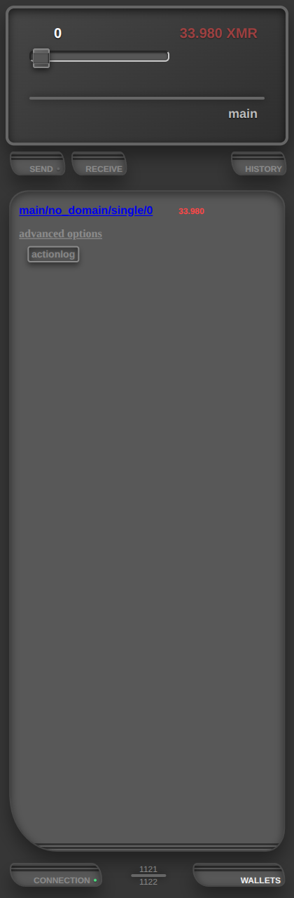
seed derivation
One seed phrase backs every wallet. The secret comes from the phrase plus a
readable route (identity/domain/wallet_type/wallet_slot, default
main/no_domain/single/0). This is human readable similar to a URL. It is not as cryptic as other derivation standards,
with the stated goal of fostering a more direct relation with the seedphrase and the wallet key material. Users should view the wallet not as black box, but
as a simple tool that helps them access the secrets that are understandably derived from the seed. The phrase runs
through the BIP39 seed function with the route, the offset passphrase, the
coin name, and the key type to derive the actual keypair in the wallet.
Readable routes keep each wallet in its context: a shared view key belongs to one slot and one domain, so recovery cannot leak it to the wrong service. One phrase also bundles the multisig escrow shares (spend, comms, hotkey) under one route. more info
payment links
The merchant side: a Bun server with a dashboard, checkout pages, and the two
endpoints the wallet talks to. Start it in production with
bun run production. It listens on
http://localhost:3003.
login
The dashboard sits behind one admin password. The first start writes
ADMIN_SECRET into .env; use that value to log in.
The session cookie is HttpOnly, Secure, and SameSite=Strict.
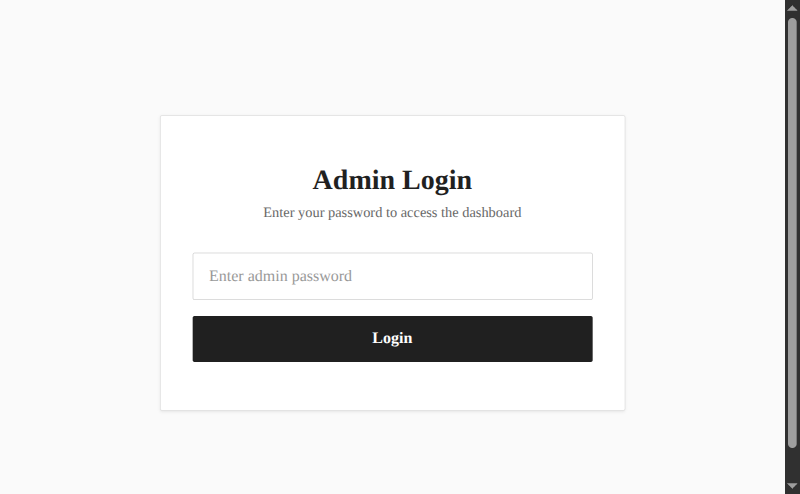
dashboard
The dashboard lists wallets, transactions, and payment links. A link can be a product (fixed stock) or an invoice (single use, with a due date). The wallets page shows balances, sync heights, and the node URL setting.
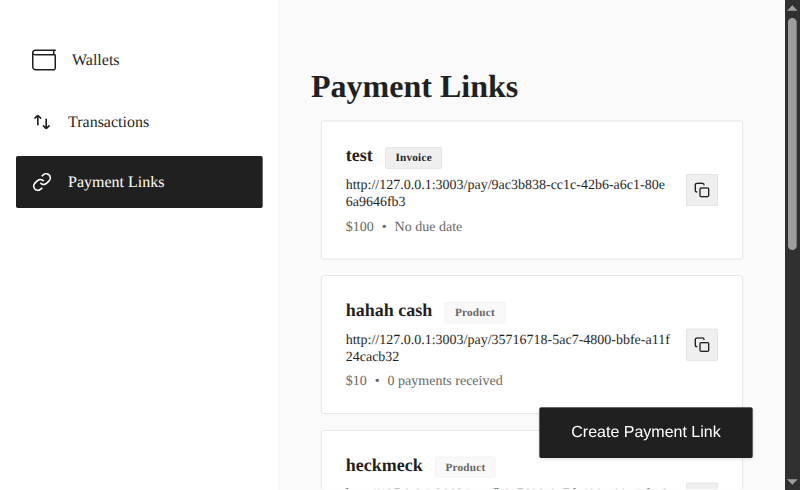
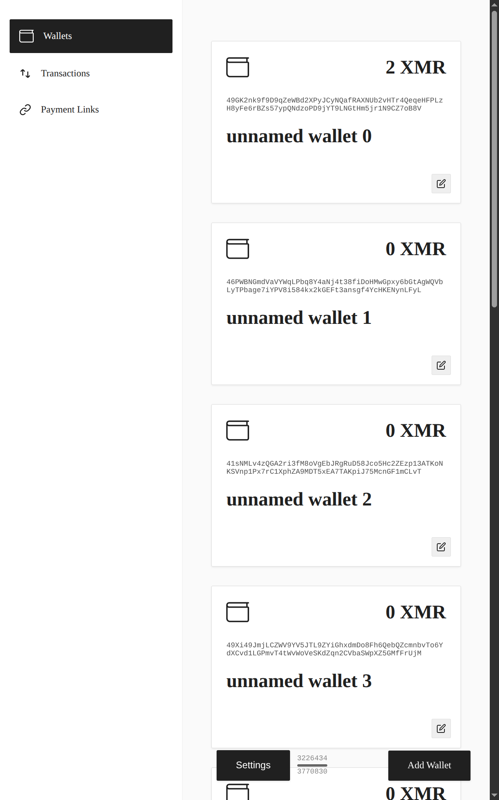
link detail and checkout
Each link has a detail page with its /pay/… URL, amount,
type, and payment history. The checkout page makes one session and one
integrated address per visitor, shows the amount and a QR code, and offers
the browser-wallet button. The payment status frame polls until the scan
sees the output with enough confirmations.
The site marks an invoice paid only after its own scan shows the output with at least the requested amount and its confirmation count.
the two endpoints
GET /monerochan001/<address> answers
{valid_address: true} only while that address belongs to a live
checkout session. This is what makes a payment link read
valid in the wallet. POST /monerochan002/ receives a
view-only key from the wallet so the site can scan. This only happens after
the same-site check passed. The site also checks the admin session on this POST and saves the view key only when that check passes. Direct link clicks without the extension land on
the install page, shown in the tool calls section above.